Campanile

At low starting times, the clock tower gets reinterpreted to a 3d tower, and then to a lighthouse. The details then end up returning.
CS180 / PROJECT 03 / PART A + B
From image editing and visual illusions
to training a digit generator from scratch.
Denoising input (left) · Independently generated visual anagram (right)
For sections 1.1 - 1.5 I used the Luke Skywalker desert sunset image. The input is center cropped to 512 x 512 and normalized to [-1, 1]. A single Gaussian noise tensor (seed 180) is reused all 3 times. This makes sure the differences only come from interpolation weight.
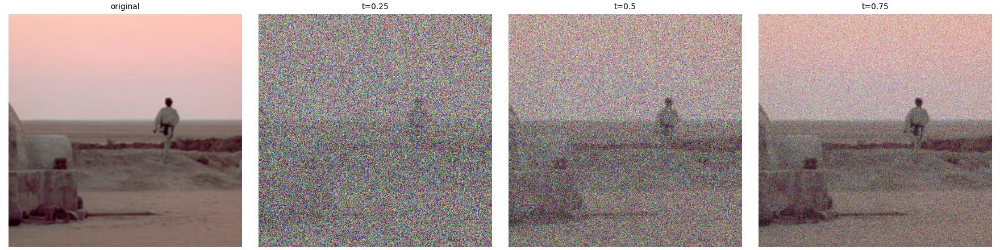
At t = 0.25, noise obscures the high level details and the backgrounds. At t = 0.75, the overall horizon, silhouette and pinky sky are easy to recognize. Most fine details are also recognizable. As we increase time, we move more towards the clean image.
I first divide each noisy input by t in order to restore the image amplitude. Then I applied Gaussian blur for sigma values in (1, 2, 4, 8, 16). I chose the lowest MSE against the known original separately for each input. This uses the clean reference to select a baseline; and it is not blind denoising.
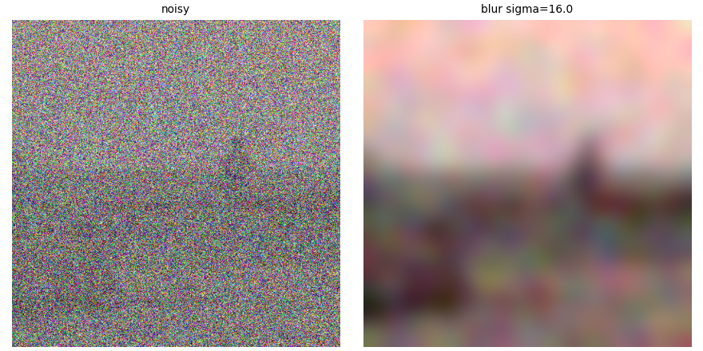
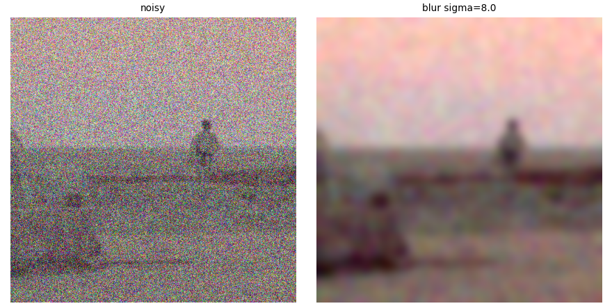
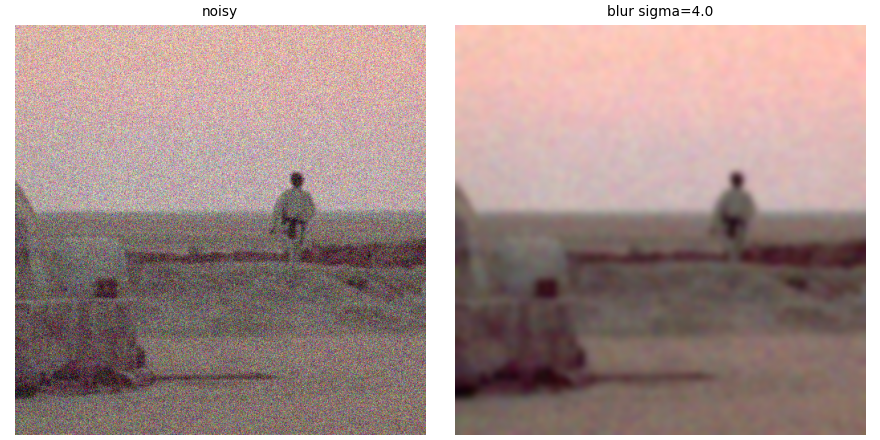
Averaging suppresses noise but also softens the person, buildings, and foreground texture. The flat sky is easier to recover than the small details.
We use the pretrained model to predict velocity from the current image, the time, and a prompt - "a high quality photo". We estimate the clean endpoint in 1 shot after predicting the velocity.
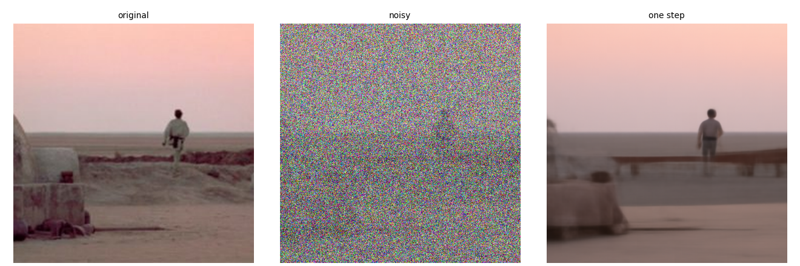
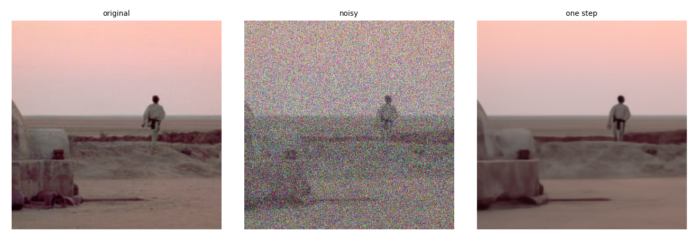
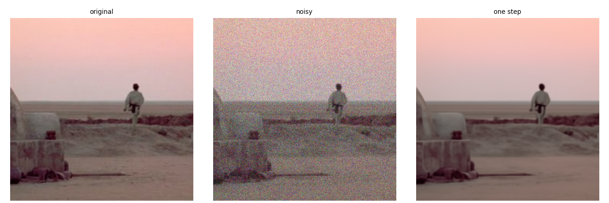
The new learned estimate preserves more sharp scene components and structure compared to Gaussian blur. The larger the starting time, the more information about the image provided to the model -- the smaller the extrapolation the better it seems.
I compare the predicted updates with the exact updates using the same image and noise pair to keep things consistent. To measure the error, I calculate the squared difference at each pixel, average it across the RGB channels, and then take the square root. This is all done before any clipping or scaling for display.
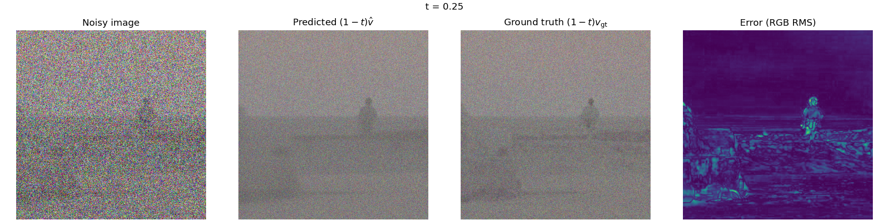
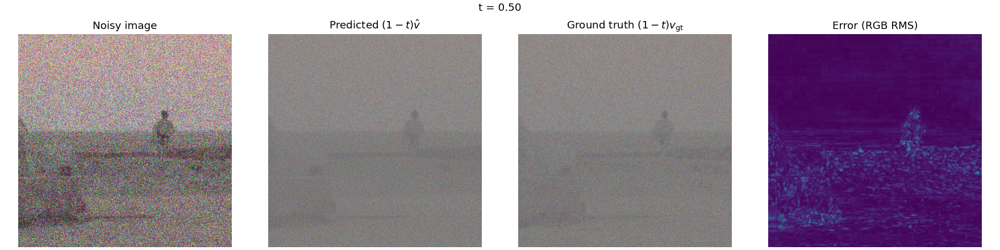
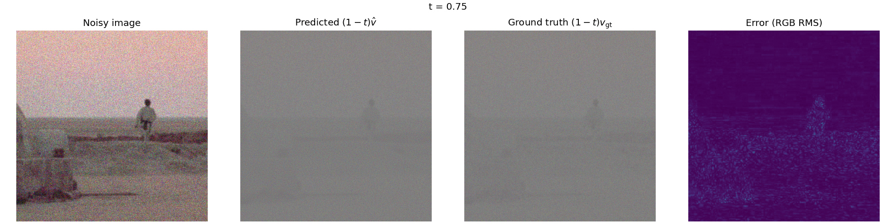
All updates use the same symmetric RGB display scale, with zero shown as middle gray. The error maps also share the same linear scale - it ranges from zero to the largest error across all three maps. Brighter areas == larger errors which are mostly concentrated around the figure and the textured foreground. The darker map at t = 0.75 shows that the update error is smaller at that point. Since the factor (1-t) also gets smaller, this doesn't necessarily mean the velocity pred is more accurate.
Euler sampling predicts a new velocity at each state. We use step of h = 0.02.Since we use t = 0.50, we take 25 updates. We end once t >= 1.
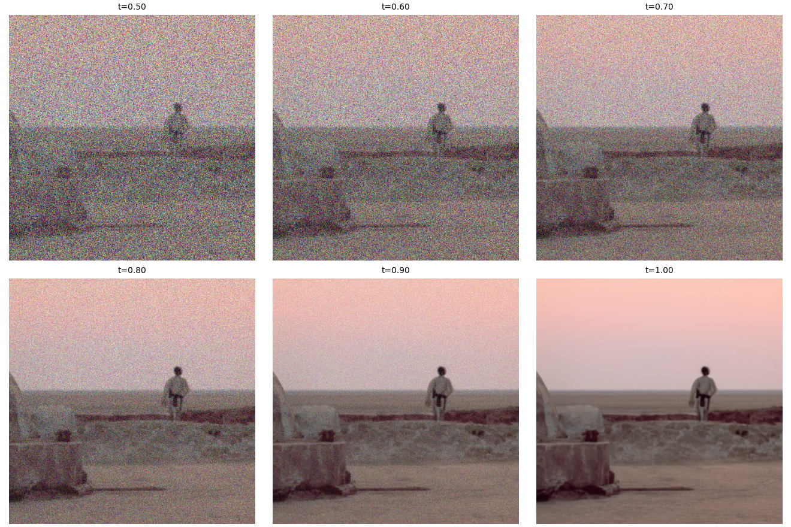
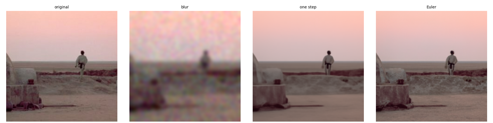
| Method | MSE |
|---|---|
| Gaussian blur | 0.00486194 |
| One-step | 0.00139233 |
| Euler | 0.00195181 |
Both one step and euler are clearly better than blur. One-step has the lowest MSE in this run, so Euler is not automatically better. Integrating a learned field means following its preferred image trajectory, and this can lead to images that are not exactly similar to the original.
I've performed 50 euler updates for our five gaussian tensors using "a high quality photo" prompt. We start at t = 0 and use Seeds 180-184 for the CFG comparison.


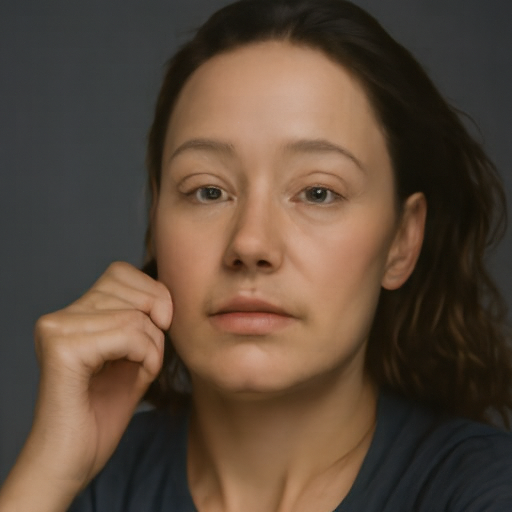


Our prompt is generic, but all five samples are still portraits. Seed 180 has a featureless face and Seed 183 has rough painterly facial artifacts. Other samples are much more coherent, but it is clear that this small set shows strong portrait preference.
We use CFG to combine predictions from the prompt - "a high quality photo" and an empty prompt. For Guidance we use w = 7 and h = 0.02.


Due to the extra strength from CFG, we get much more clear facial features and framing. I think this is best shown by seeds 180 and 183. The main take away is that even though the samples are still different in appearance, their general composition is very similar.
I mix each input with fixed seed-180 noise, and then use CFG - “a high quality photo”. Every sweep used h = 0.02 and w = 7. Lower starting times remove more source information and allow stronger reinterpretation.
At low starting times, the clock tower gets reinterpreted to a 3d tower, and then to a lighthouse. The details then end up returning.
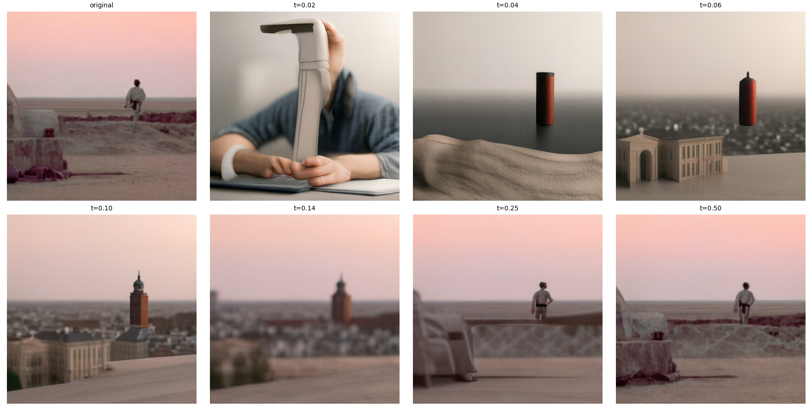
At t = 0.02, the model changes the scene into a close-up that looks nothing like the original. At intermediate values, the standing figure starts looking more like a tall structure. By t = 0.25–0.50, the original scene becomes recognizable again.
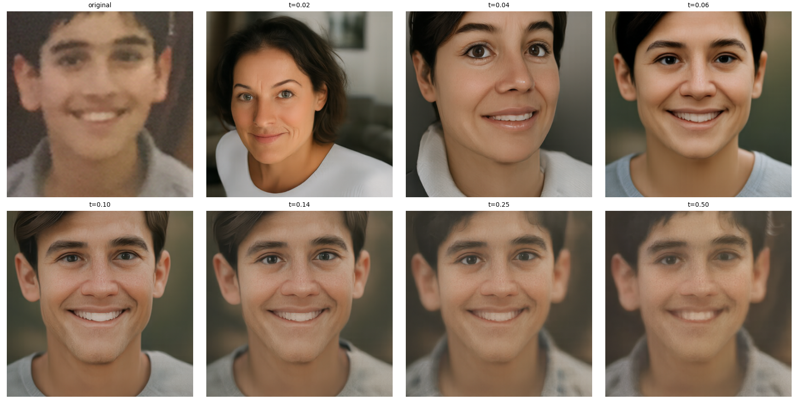
At lower starting times, the model changes the person's face quite a bit. As t increases, the edits become less noticeable. The original smile and framing stay mostly intact at higher values.
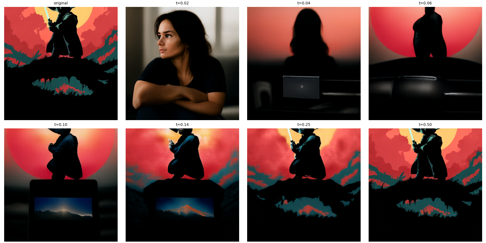
The strongest edit turns the illustration into a portrait. At intermediate times, the model keeps the red background and dark silhouette but changes how the scene looks. With higher values of t, the result stays closer to the original illustration instead of becoming a realistic photo.
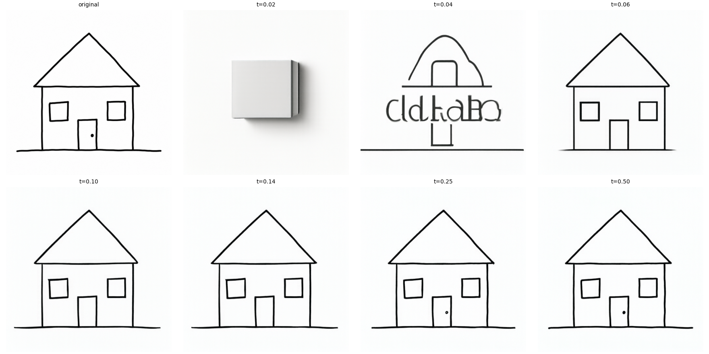
At lower values of t, the model produces unrelated objects or distorts the original lines. Once t reaches around 0.06, the house becomes recognizable again. Even with a photo prompt, the model struggles to turn the simple sketch into a realistic image.
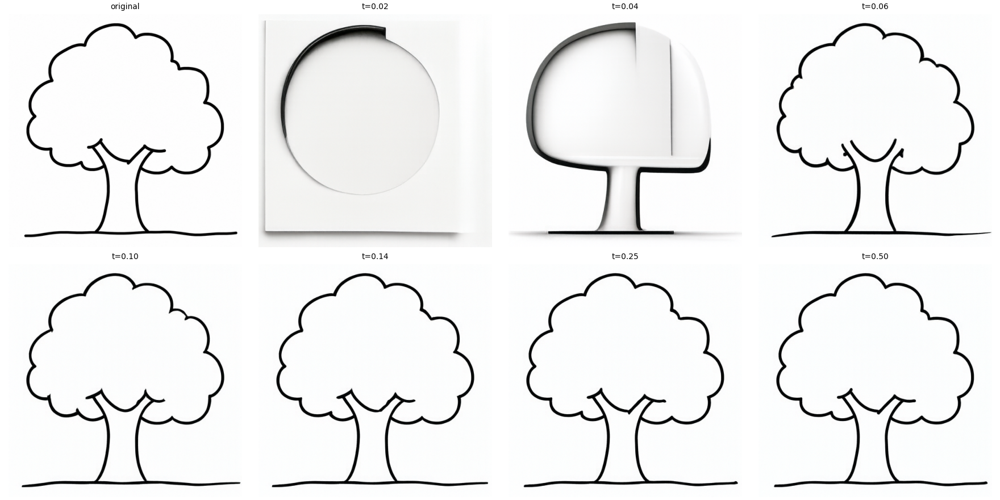
At t = 0.02–0.04, the model turns the tree outline into smooth, unrelated shapes. By t = 0.06, the tree starts looking recognizable again. At higher values, the results stay pretty close to my original drawing.
For this part, I used the same three images, noise seed, and seven starting times. I only changed the text prompt to see how much the model would follow the new description while keeping the original image.
a photograph of a tall rocket on a launch pad surrounded by trees under a blue sky
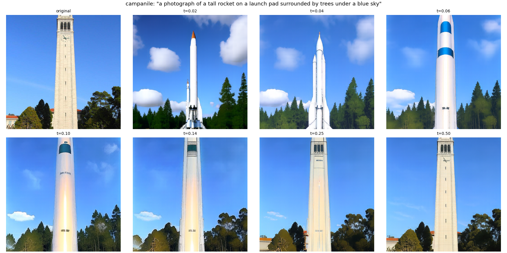
At lower starting times, the Campanile turns into a rocket pretty clearly. Around t = 0.10–0.14, the results mix the tower's shape with rocket-like details. By t = 0.50, the original Campanile becomes the main focus again.
a photograph of an astronaut beside a domed research station on an icy planet under green northern lights
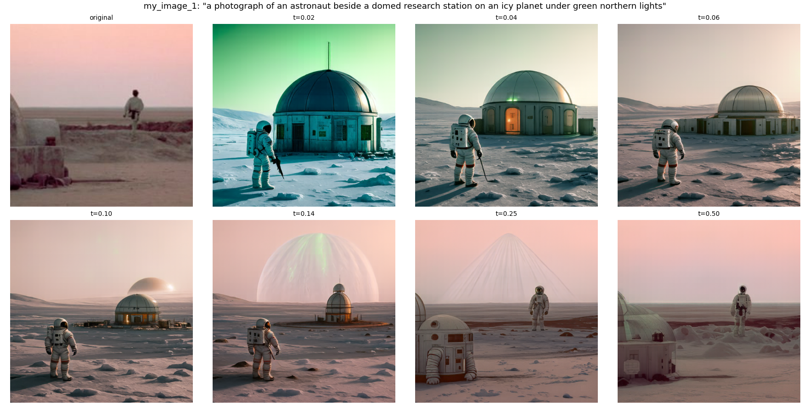
The earlier results show an astronaut and a dome-shaped station, with the strongest green lighting at t = 0.02. As t increases, the model keeps more of the original desert sunset and layout. Because of this, the later images don't fully match the icy-planet prompt.
a photograph of a smiling young astronaut wearing a white space suit inside a spacecraft, with Earth visible through a window
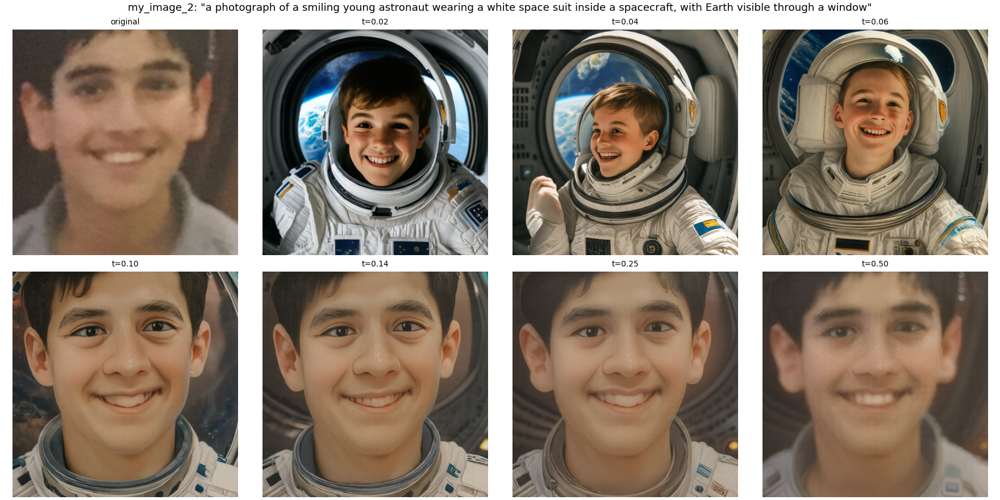
The first three edits turn the person into an astronaut wearing a helmet, although the face looks quite different. At higher starting times, the original face is easier to recognize, but the astronaut outfit becomes less noticeable. The model also struggles to consistently include Earth through the window.
For each Euler step, I calculate the guided velocity for the upright image and then do the same for the image rotated by 180°. I rotate the second velocity back and average the two predictions. The rotation only affects the image's height and width, leaving the batch and color channels unchanged.
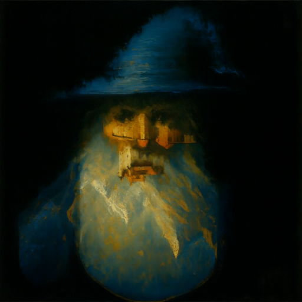
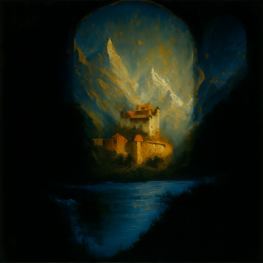
The wizard is easy to recognize when the image is upright. After rotating it, the beard and hat start resembling parts of a landscape. However, the castle isn't very clear, so the illusion only works partially.
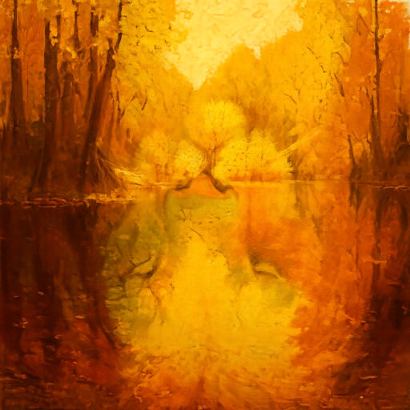
The upright image clearly shows a lion. When rotated, the darker vertical shapes start looking like trees surrounding a bright lake reflection. This creates a more convincing illusion than the wizard and castle example.
I combine the low-frequency parts of the distant prompt's guided velocity with the high-frequency parts of the close-up prompt's velocity. Both predictions use the same image and time step. For the Gaussian filter, I use a kernel size of 265 and a sigma of 16 on a 512 × 512 image.
Up close, the sunflower heads and stems are easy to see. From farther away, the larger shapes start forming something that resembles a face, although the lion isn't very clear. This illusion works less effectively than the other example and could probably improve with a different prompt or random seed.
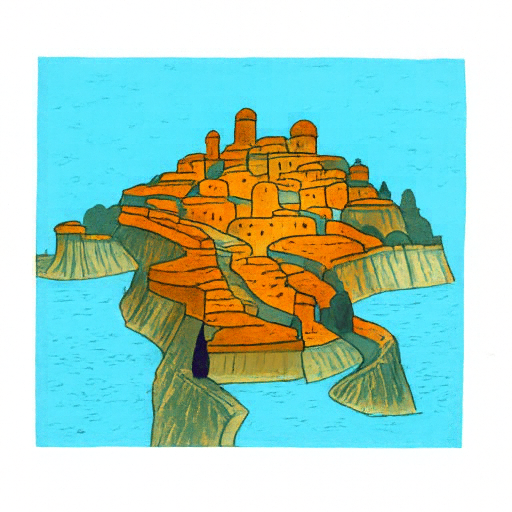
Up close, the image shows buildings and winding paths that resemble an ancient city. From a distance, the overall shape starts looking like a sea turtle, with a shell and flippers. The city details are still visible, though, so the illusion doesn't completely switch between the two subjects.
In Part A, I worked with a pretrained model. For this part, I built and trained my own models using MNIST, which contains 60,000 training images and 10,000 test images. Each image is 28 × 28 pixels with values between 0 and 1. My first goal was to train a UNet that could take a noisy digit and recover the clean version in a single forward pass.
The encoder gradually shrinks the image from 28 × 28 to 14 × 14 and then 7 × 7. Average pooling reduces it further to a 1 × 1 bottleneck, while transposed convolutions bring it back to the original size. I also use skip connections to combine encoder and decoder features at matching resolutions. This helps the model keep important details, like the shape and position of each digit.
Each convolution block uses batch normalization and GELU activation. For the final layer, I use a linear convolution without a sigmoid so the model can predict values freely. I followed the course architecture and included the full implementation in my submitted notebook .
To see how noise affects the images, I picked the first test example of each digit from 0 to 9. I kept the same Gaussian noise pattern and gradually increased σ. As σ gets larger, the digits become harder to recognize. Unlike the flow interpolation used later, this method adds noise without reducing the original image's contribution.
Each column represents a digit from 0 to 9. I clip the pixel values to [0, 1] only when displaying the images. The model itself receives the original noisy tensors without clipping.
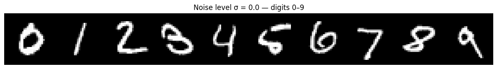
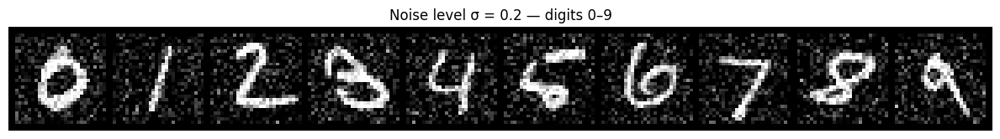
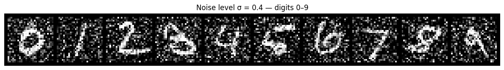
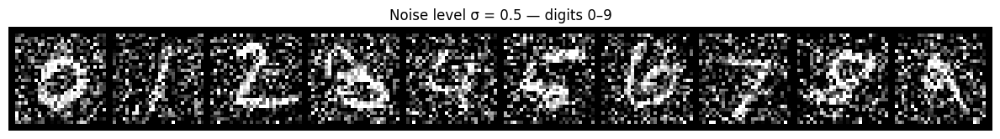
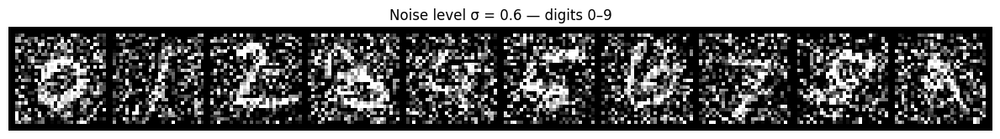
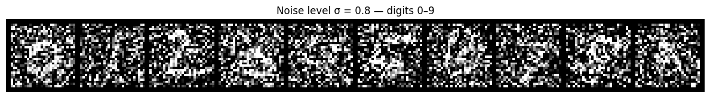
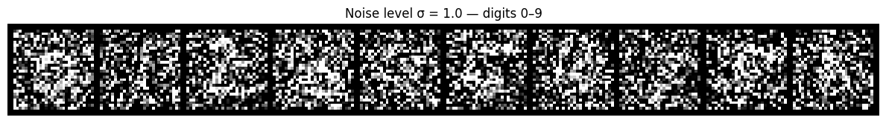
I trained the denoising model using only the shuffled MNIST training images. For every batch, I added fresh Gaussian noise and trained the model to recover the clean digits using mean squared error. I didn't use digit labels during training. To compare progress fairly, I kept the same ten test images across all checkpoints.
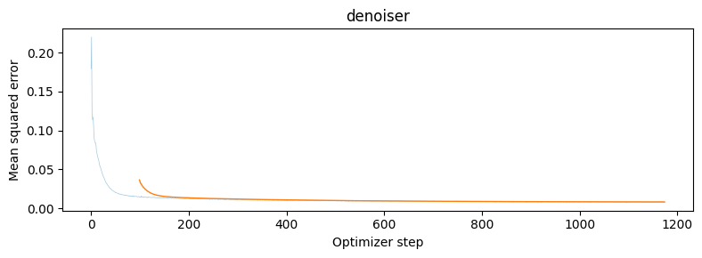
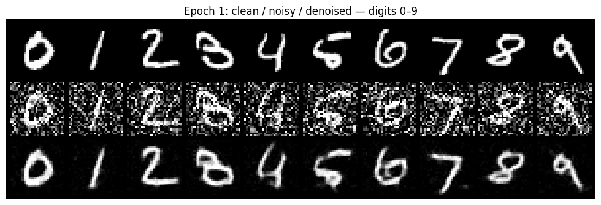
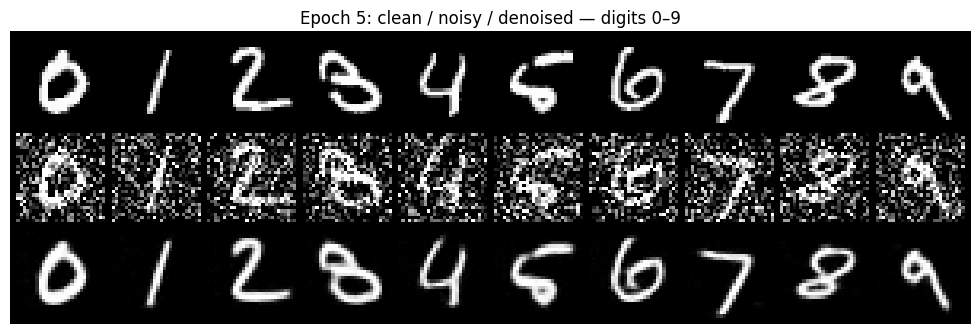
After just one epoch, the model already removes most of the visible noise. By epoch 5, the digits look noticeably smoother and are generally easy to recognize. The overall shapes are preserved, although some smaller stroke details still differ from the originals.
Next, I tested the epoch-5 model on several noise levels: σ = 0, 0.2, 0.4, 0.5, 0.6, 0.8, and 1.0. I used the same ten test images and base noise pattern for every grid. Since the model trained at σ = 0.5, that serves as the reference point. The other values let me see how well it handles noise levels it hasn't trained on.
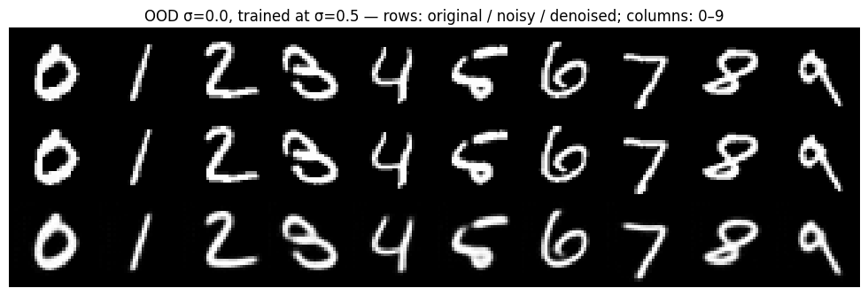
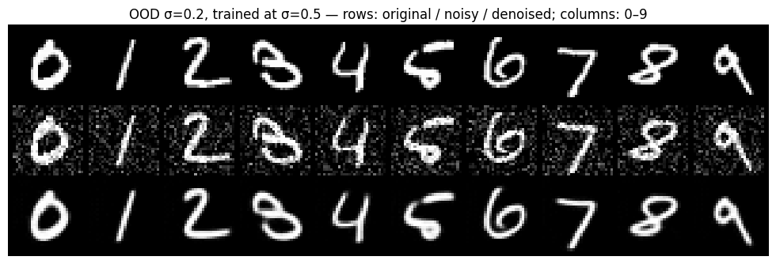
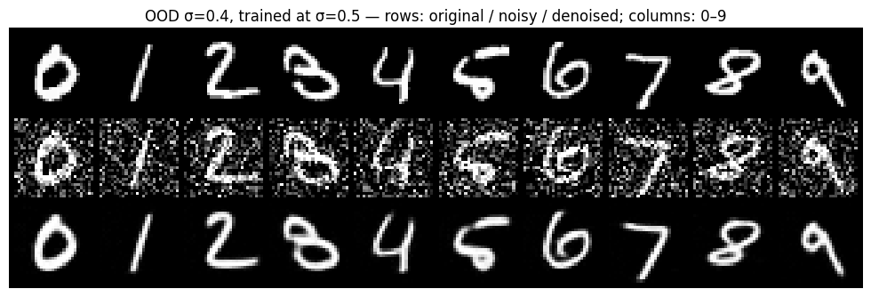
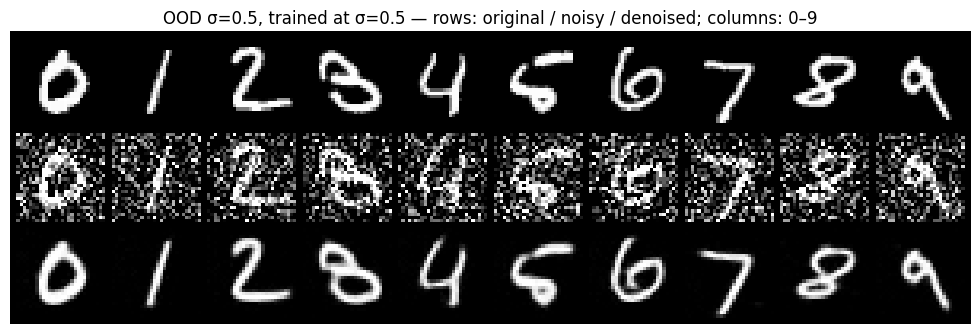
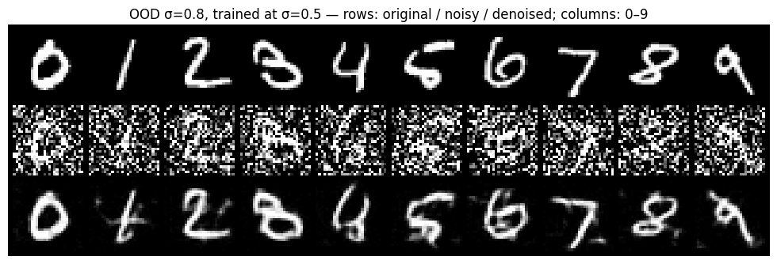
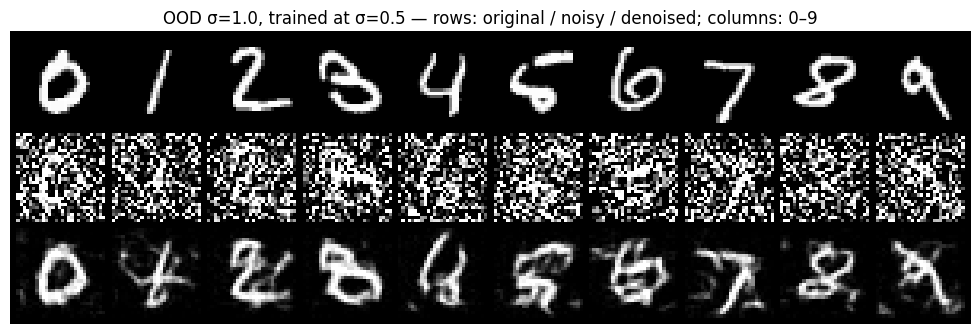
At lower noise levels, the model keeps most of the original digit shapes. When σ = 0, the first two rows look identical because no noise was added. Things become less reliable around σ = 0.8 and 1.0. Some strokes disappear or merge together, and a few outputs even start looking like different digits. With that much noise, the model has less information to work with.
For this experiment, I trained a separate model using completely random Gaussian noise as input and clean MNIST digits as targets. Unlike the earlier denoising task, the inputs contain no information about the actual digits. I used the same ten fixed noise samples at both checkpoints to see whether training changed the results.
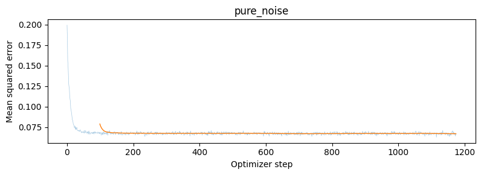
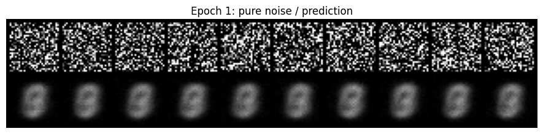
The results look almost identical across different noise inputs. Instead of generating ten distinct digits, the model produces blurry shapes that resemble several digit strokes overlapping. Even after more training, the outputs don't turn into clear, recognizable digits.
This makes sense because the random noise has no connection to the target digit. The model can't determine which digit it should generate from the input alone. With mean squared error, the best prediction is the average training image in this situation. That average combines features from digits 0 through 9, explaining the blurry shapes. The loss can still decrease, but that doesn't mean the model has learned to generate meaningful digits.
Instead of predicting a clean image all at once, the flow model learns to predict how the image should change over time. During training, I mix a random Gaussian image x₀ with a clean digit x₁ using a randomly chosen time t. At t = 0, the image is pure noise. At t = 1, it becomes the clean digit.
I kept the original UNet structure and added two fully connected blocks to give it information about time. Each block follows Linear → GELU → Linear. One converts t into 2D values, while the other produces D values. I reshape these embeddings so they can multiply the features at the unflatten layer and the first up-block.
I placed the time embeddings in the locations shown in the course architecture diagram . This model only uses time conditioning, so I don't provide any digit labels.
For every training batch, I generate fresh Gaussian noise and sample a different time for each image. The model predicts the velocity needed to move from the noise toward the clean digit. I train it using mean squared error between its predicted velocity and the target x₁ − x₀. The exponential learning-rate scheduler updates after each epoch. With 938 batches per epoch, the model completes 9,380 optimizer updates.
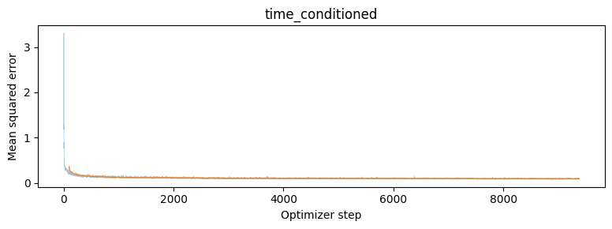
The training loss falls quickly during the first few epochs and then decreases more slowly as training continues. Since this model predicts velocity rather than reconstructing clean images directly, its loss values aren't directly comparable to the earlier denoising model.
To generate new digits, I start with 40 random Gaussian images. The UNet predicts how each image should change at the current time, and I use that velocity to update it. I repeat this process for 50 Euler steps, moving from t = 0 to t = 1 with a step size of 1/50. I also keep the seed fixed at 0 so each checkpoint starts from the same noise.
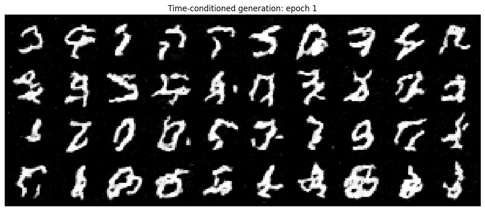
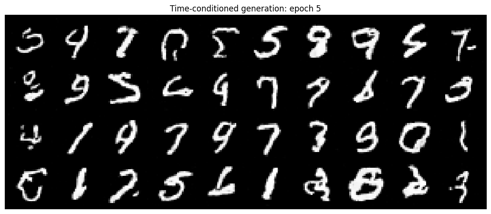
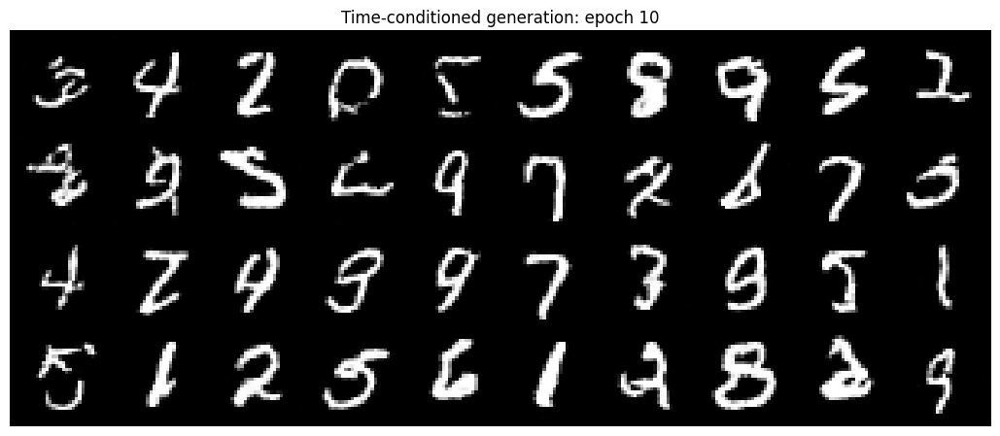
After epoch 1, many generated digits have broken strokes or unclear shapes. As training continues, more recognizable digits appear, although some still look distorted or incomplete. Overall, this works much better than trying to generate digits from pure noise in a single step. Still, time conditioning alone doesn't produce consistently clean results.
To control which digit the model generates, I represent each label using a ten-element one-hot vector. I then add two fully connected blocks to process this class information. The class embeddings scale the decoder features, while the time embeddings are added at the same two locations. This allows the model to use both the requested digit and the current time when predicting velocity.
During training, I randomly remove the class information for 10% of the examples by replacing the entire one-hot vector with zeros. I leave the time input unchanged. This teaches the same model to make predictions both with and without a digit label, which is necessary for classifier-free guidance (CFG).
I kept the same velocity MSE loss and trained two separate models to compare learning-rate strategies. The first uses Adam with an initial learning rate of 0.01 and exponential decay of γ = 0.1^(1/10). The second uses Adam with a constant learning rate of 0.001. Both models train for 9,380 optimizer updates, and I save checkpoints after epochs 1, 5, and 10.
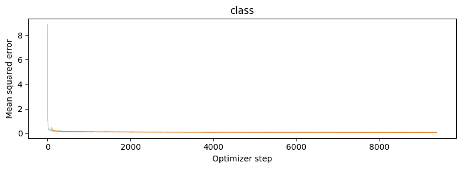
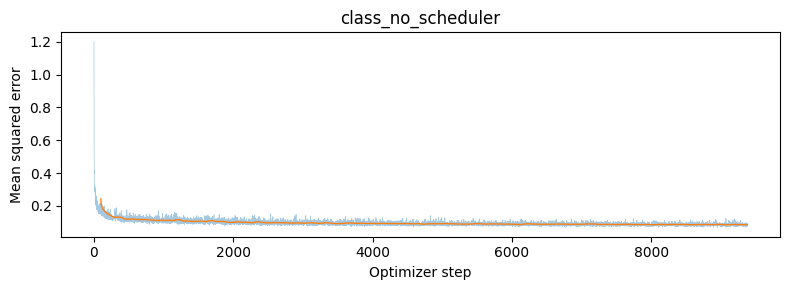
Both training losses drop over time and eventually settle at lower values. The curves show that both setups learn the velocity prediction task. However, these are independently trained models, so they also differ in initialization and randomly sampled noise. This means the comparison isn't controlled for learning rate alone.
For each digit, I generate four samples and arrange them in a grid with four rows and ten columns. Each row shows digits 0 through 9 in order. I use 300 Euler steps with a guidance scale of 5. I also fix the seed at 0 for every checkpoint and both models, keeping the initial noise consistent.
For classifier-free guidance, I calculate two velocity predictions at each step. One uses the requested digit's one-hot label, while the other uses an all-zero class vector. Both predictions use the same image and time. The zero vector represents the unconditional prediction, not the digit 0.
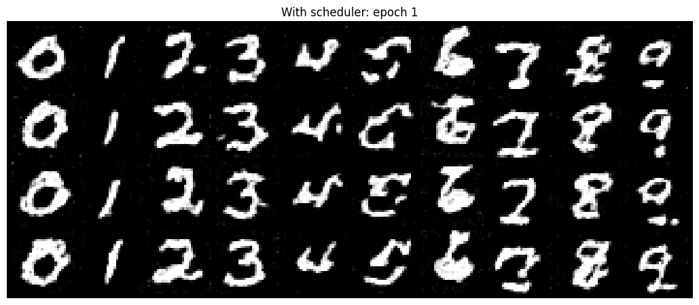
To test training without the exponential scheduler, I changed Adam's learning rate from an initial 0.01 to a constant 0.001. I kept everything else the same, including the architecture, batch size, training duration, class dropout, Euler steps, guidance scale, and sampling seed. This lets me compare the two training setups while keeping the other settings consistent.
Looking at the saved grids, both models generate digits that mostly match their requested labels. Some earlier samples look uneven or have incomplete strokes, but the later checkpoints produce clearer shapes. The model without a scheduler still generates fairly recognizable digits, so removing the decay doesn't seem to hurt the visual results much in this experiment. However, many samples within the same digit class look similar. Since I only compared these saved runs, I can't conclude that both models would perform equally well across different seeds or on a quantitative accuracy test.